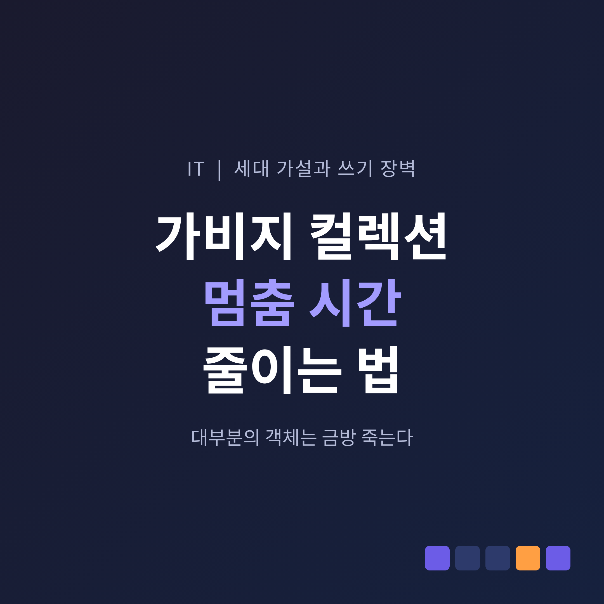
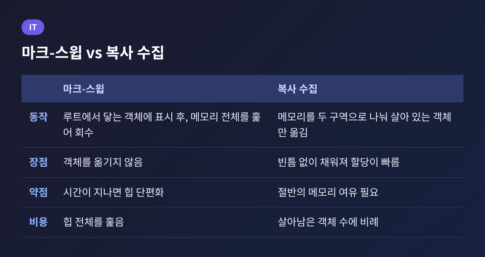
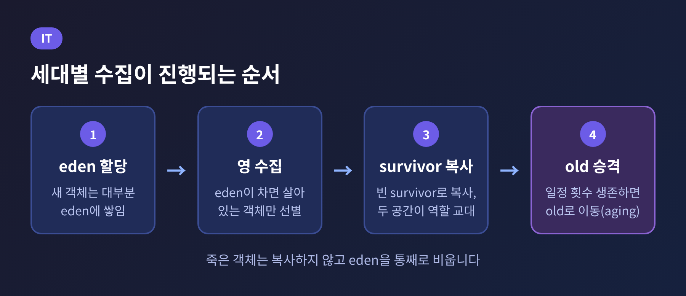
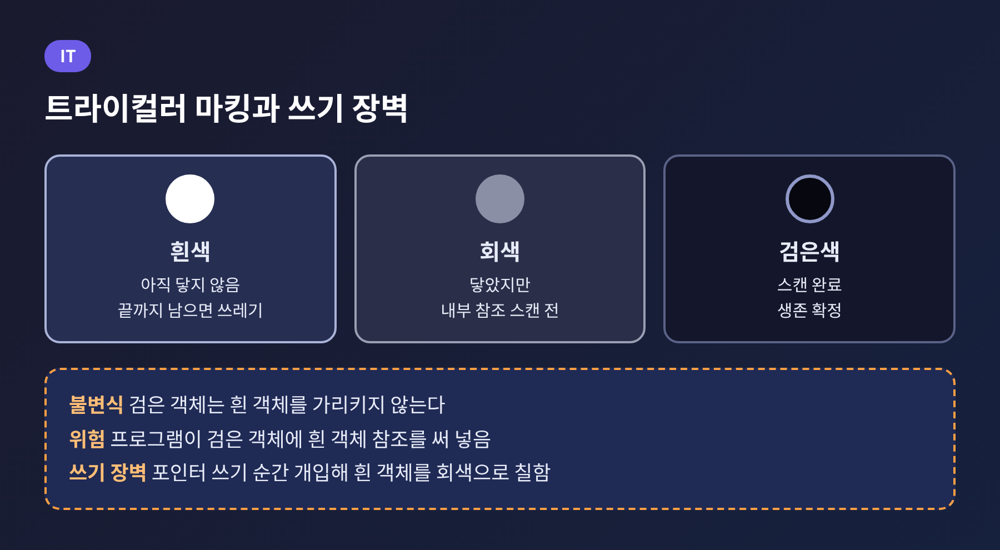
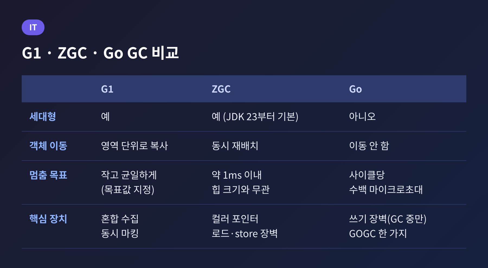
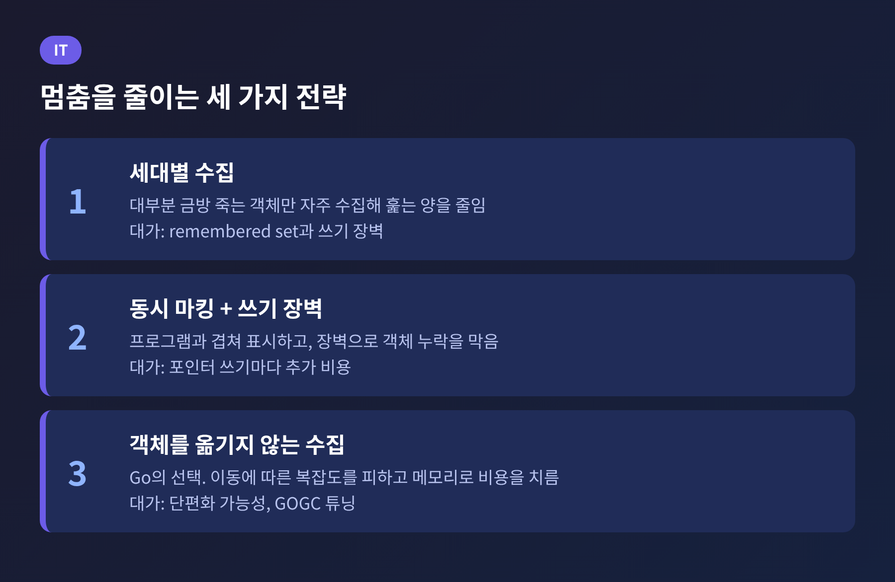

세 줄 요약
오늘은 가비지 컬렉션이 프로그램을 멈추는 이유와, 그 멈춤 시간을 줄이는 설계를 정리해 보려 합니다.
마크-스윕과 복사 수집의 기본에서 출발해 세대별 수집, 쓰기 장벽, 동시 수집까지 이어서 살펴보겠습니다.
G1, ZGC, Go 런타임이 같은 문제를 어떻게 다르게 풀었는지도 비교합니다.
GC는 쓰지 않는 객체를 찾아 메모리를 되찾는 작업입니다.
가장 단순한 방식은 마크-스윕입니다.
루트(스택과 전역 변수)에서 출발해 닿을 수 있는 객체에 표시를 하고, 그다음 메모리를 처음부터 끝까지 훑어 표시 없는 영역을 회수합니다.
복사 수집은 접근이 다릅니다.
메모리를 같은 크기의 두 구역으로 나누고, 루트에서 닿는 객체만 한쪽에서 다른 쪽으로 옮깁니다.
옮기고 나면 원래 구역은 통째로 비워지고, 새 구역은 빈틈 없이 채워집니다.
두 방식 모두 약점이 있습니다.
옮기지 않는 방식은 시간이 지나면 힙이 심하게 단편화될 수 있습니다.
옮기는 방식은 대신 빈 메모리 포인터를 한 칸 밀기만 해도 할당이 되니 빠릅니다.
문제는 이 작업 동안 프로그램이 객체를 바꾸면 안 된다는 점입니다.
그래서 가장 단순한 스톱더월드(STW) 수집기는 수집이 끝날 때까지 프로그램을 완전히 세웁니다.
힙이 클수록 훑을 객체가 늘고, 멈춤도 그만큼 길어집니다.

멈춤을 줄이는 첫 번째 아이디어는 훑는 양 자체를 줄이는 것입니다.
출발점은 관찰입니다.
약한 세대 가설은 "대부분의 객체는 짧은 시간만 생존한다"고 말합니다.
Wikipedia는 같은 현상을 최근에 만든 객체일수록 금방 도달할 수 없게 될 가능성이 높다는 뜻에서 유아 사망률이라고도 부릅니다.
이 관찰을 설계로 옮기면 힙이 세대로 나뉩니다.
HotSpot JVM의 영 세대는 eden과 두 개의 survivor 공간으로 이루어집니다.
새 객체는 대부분 eden에 할당됩니다.
eden이 차면 살아 있는 객체만 비어 있던 survivor로 복사되고, eden과 원래 survivor는 통째로 비워집니다.
다음 수집에서는 두 survivor의 역할이 서로 바뀝니다.
여러 번 살아남은 객체는 old 영역으로 올라갑니다. 이 과정을 aging이라 부릅니다.
Oracle 문서에 따르면 old 영역이 가득 차 힙 전체를 수집하는 major 수집은 관련 객체가 훨씬 많아 보통 minor 수집보다 훨씬 오래 걸립니다.
핵심은 비용 구조입니다.
복사 수집의 비용은 죽은 객체가 아니라 살아남은 객체의 수에 비례합니다.
대부분이 죽어 있는 영 세대를 자주 수집하면, 적은 양을 복사하고 많은 메모리를 한꺼번에 되찾습니다.
오래 사는 객체가 가득한 old 영역은 드물게만 건드리면 됩니다.

공짜는 아닙니다.
영 세대만 수집하려면 old의 객체가 젊은 객체를 가리키는 경우를 놓치면 안 됩니다.
old 전체를 훑어 확인하면 세대로 나눈 의미가 없어집니다.
그래서 old 영역 중 젊은 객체를 가리킬 수 있는 위치를 따로 기록해 둡니다. 이것이 remembered set입니다.
JEP 439는 remembered set을 "old 세대에서 젊은 객체의 포인터를 가질 가능성이 있는 메모리 주소의 집합"으로 설명합니다.
이 집합을 최신으로 유지하려면, 프로그램이 포인터를 쓸 때마다 끼어드는 코드가 필요합니다.
이것이 쓰기 장벽입니다.
세대형 ZGC는 이 일을 store 장벽이 맡습니다.
JEP 439에 따르면 old 영역마다 비트맵을 두 개 두고, 영 수집이 시작될 때마다 원자적으로 맞바꿉니다.
앱 스레드가 비트맵이 지워지길 기다릴 필요가 없도록 한 설계입니다.
쓰기 장벽은 세대 수집뿐 아니라 동시 수집에도 쓰입니다.
다음 장에서 그 이유를 보겠습니다.
멈춤을 줄이는 두 번째 아이디어는 표시 작업을 프로그램과 동시에 하는 것입니다.
Go 블로그는 Go 1.5의 수집기를 "동시, 트라이컬러, 마크-스윕"이라고 소개하며, 1978년 Dijkstra가 제안한 접근에 기반한다고 밝힙니다.
트라이컬러는 객체를 세 색으로 나눕니다.
루트에서 시작해 회색 객체를 하나씩 스캔하고, 회색이 사라지면 남은 흰색이 쓰레기입니다.
이 방식이 안전하려면 "검은 객체는 흰 객체를 가리키지 않는다"는 불변식이 지켜져야 합니다.
문제는 프로그램이 동시에 돌고 있다는 점입니다.
이미 스캔이 끝난 검은 객체에 프로그램이 흰 객체의 참조를 써 넣으면, 그 흰 객체는 아무도 다시 보지 않아 살아 있는데도 회수됩니다.
쓰기 장벽이 이 틈을 막습니다.
Go 블로그 설명으로는 힙 포인터가 바뀔 때마다 실행되는 작은 함수가 새로 도달 가능해진 흰 객체를 회색으로 칠해 줍니다.
Go 팀의 ISMM 2018 발표에 따르면, 이 장벽은 GC가 진행되는 동안에만 켜지고 평소에는 전역 플래그만 확인합니다.
세대형 수집에서는 장벽이 늘 켜져 있어야 한다는 점이 뒤에서 중요해집니다.

같은 문제를 풀어도 선택은 갈립니다.
G1은 균형을 택했습니다.
Oracle 문서는 G1의 목표를 "최대 처리량도 최저 지연도 아니라, 높은 처리량에서 비교적 작고 균일한 멈춤"이라고 설명합니다.
힙을 영역으로 나누어 영 세대 영역을 먼저 수집하고, 혼합 수집으로 old 영역을 조금씩 되찾습니다.
멈춤 목표(MaxGCPauseMillis)를 정해 주면 그에 맞춰 수집량을 조절합니다.
문서는 영 세대 크기를 -Xmn 등으로 고정하지 말라고도 경고합니다. 멈춤 시간 조절이 무력해지기 때문입니다.
실패하면 Full GC가 일어나며, 보통 Evacuation Failure 뒤에 나타납니다.
ZGC는 지연을 정면으로 겨냥합니다.
OpenJDK ZGC 위키는 애플리케이션 스레드를 1ms 넘게 멈추지 않으며, 멈춤 시간이 힙 크기와 무관하다고 밝힙니다.
수백 MB에서 16TB까지의 힙을 다룹니다.
JDK 21의 JEP 439로 세대형이 도입되었고, JEP 474(JDK 23)에서 기본값이 되었으며, JEP 490에서 비세대형 모드는 제거 대상이 되었습니다.
이유는 세대형이 대부분의 워크로드에서 더 낫다고 판단했기 때문입니다.
효과는 수치로도 보입니다.
JEP 439는 Apache Cassandra 벤치마크 한 건에서 세대형이 힙 크기 4분의 1로 4배의 처리량을 냈다고 적습니다.
다만 단일 벤치마크의 결과이며 일반 수치는 아닙니다.
Inside Java의 측정에서는 처리량이 단일 세대 ZGC보다 JDK 17 기준 약 10% 높았고, P99 멈춤이 10~20% 줄었습니다.
평균 지연은 2~3마이크로초 정도 나빠졌습니다.
얻는 것이 있으면 내주는 것도 있다는 사례입니다.
Go는 정반대 길을 걸었습니다.
Go의 수집기는 동시 트라이컬러이면서 객체를 옮기지 않으며, 지금도 세대형이 아닙니다.
Rick Hudson의 발표에 따르면 멈춤은 2015년 8월 약 300~400ms에서 30~40ms로, 약 6개월 뒤 4~5ms로 줄었고, 2017년 3월 스택 스캔 중 멈춤을 없애 1ms 미만에 들어섰습니다.
멈춤 문제를 이미 풀었기에 세대형의 이득이 작았다는 것이 Go 팀의 판단입니다.
세대형 시도는 쓰기 장벽이 항상 켜져 있어야 해서 비용이 컸습니다. 발표의 표현으로는 "장벽은 빨랐지만 충분히 빠르지 않았"습니다.
탈출 분석이 단명 객체를 스택에 두는 점도 세대 가설의 이득을 줄였습니다.

Go에는 사실상 GOGC 한 가지 손잡이가 있습니다.
기본값 100이면 직전 수집 이후 살아 있던 객체의 두 배까지 힙이 커질 수 있습니다.
Go GC 가이드는 목표 힙을 "라이브 힙 + (라이브 힙 + GC 루트) × GOGC / 100"으로 설명합니다.
메모리를 더 쓰는 대신 수집 횟수를 줄이는 CPU와 메모리의 교환입니다.
Go 1.19에 추가된 GOMEMLIMIT는 런타임이 쓸 총 메모리의 소프트 한도를 정합니다.
가이드는 보장이 아니라 "합리적인 노력"을 약속한다고 밝히고, 컨테이너에서는 5~10% 여유를 두라고 권합니다.
최근에는 Go 1.26 릴리스 노트에 따르면 Green Tea GC가 기본이 되었습니다.
작은 객체의 마킹과 스캔의 지역성을 높여, GC를 많이 쓰는 프로그램에서 GC 오버헤드가 10~40% 줄 것으로 예상됩니다.
새 amd64 CPU에서는 벡터 명령 덕분에 약 10%가 더 줄어든다고 합니다.
멈춤 시간이 아니라 GC가 먹는 총 비용을 겨냥한 개선이라는 점이 눈에 띕니다.
JVM 쪽에서는 세대형 Shenandoah가 JDK 24에서 실험 기능으로 들어왔고, JEP 521로 JDK 25에서 제품 기능이 되었습니다.
세대 가설을 쓰는 방향은 JVM 진영에서 점점 굳어지는 셈입니다.

정리하면 이렇습니다.
멈춤을 줄이는 길은 둘입니다. 훑는 양을 줄이거나(세대 가설), 훑는 일을 프로그램과 겹쳐서 하거나(동시 수집).
두 방법 모두 쓰기 장벽이라는 비용을 치르고, 얼마까지 치를지는 런타임의 판단이 갈립니다.
JVM은 세대형으로 가고 있고, Go는 장벽 없이 객체를 옮기지 않는 쪽을 지켰습니다.
"GC 튜닝은 멈춤, 처리량, 메모리 사이에서 무엇을 내줄지 고르는 일입니다."
사용하는 언어의 GC가 어느 쪽에 서 있는지 알고 나면, 로그의 숫자가 훨씬 또렷하게 읽힙니다.
다음에 지연 그래프에서 튀는 점을 만나신다면, 그 점이 어떤 단계에서 생겼는지부터 물어보시길 권합니다.